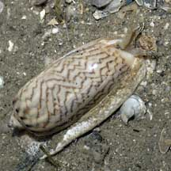
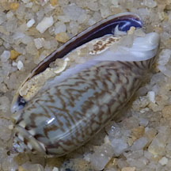
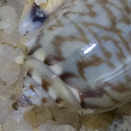
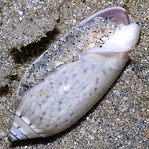
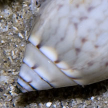

|
|
| shelled snails text index | photo index |
| Phylum Mollusca > Class Gastropoda |
| Olive
snails Family Olividae updated Sep 2020 Where seen? These bullet-shaped snails are sometimes seen on the silty sandy shores near seagrasses. These burrowing snails are more often seen above the ground at night or with the incoming tide. They leave a typical trail on the sand surface as they burrow beneath. Elsewhere, they are common in well-aerated, clean sand. Features: 2-5cm. Shell cylindrical and looks like an olive. The shell opening is narrow and many members of this family do not have an operculum. Like a cowrie, the living olive snail envelopes its shell in its mantle. This is why the shell is so glossy. Most are burrowers that live in the sand. Relying mostly on the sense of smell to find their prey, their eyes are greatly reduced or absent. Olive snails are notoriously variable in colour, even within the same species. Sometimes confused with Cone snails (Family Conidae) which can be DEADLY and should NOT be handled. If you are not sure what the snail is, do not handle it. |
 Changi, Jun 06 |
||
| What do they eat? Olive snails
are predators. They feed on other snails, small crustaceans and also
scavenge on dead animals. An Olive snail remains in the sand while
it sticks its siphon above the surface. When it 'smells' suitable
prey, it emerges to engulf the prey with its large foot, smothering
it with slime and then dragging it beneath the sand to be eaten at
leisure. Human uses: Although sometimes collected for food, they are mainly collected for their attractive shells for the shell trade. Status and threats: The Orange-mouth olive snail is listed as 'Vulnerable' on the Red List of threatened animals of Singapore. |
| Some Olive snails on Singapore shores |
 White lip ends at about half the shell opening length. Shell opening orange or orangey. |
 Spire flattened with short pointed tip. |

 White lip ends at about half the shell opening length. Shell opening purplish brown. |
 Spire conical. |

|
 White lip ends at about half the shell opening length. Shell opening violet. |
 Short conical spire. |
|
 White lip ends at less than half the shell opening length. Shell opening violet. |
 Short conical spire. |
shared by Neo Mei Lin on her blog |
| Family
Olividae recorded for Singapore from Tan Siong Kiat and Henrietta P. M. Woo, 2010 Preliminary Checklist of The Molluscs of Singapore. in red are those listed among the threatened animals of Singapore from Davison, G.W. H. and P. K. L. Ng and Ho Hua Chew, 2008. The Singapore Red Data Book: Threatened plants and animals of Singapore. ^from WORMS. +Other additions (Singapore Biodiversity Records, etc)
|
Links
References
|